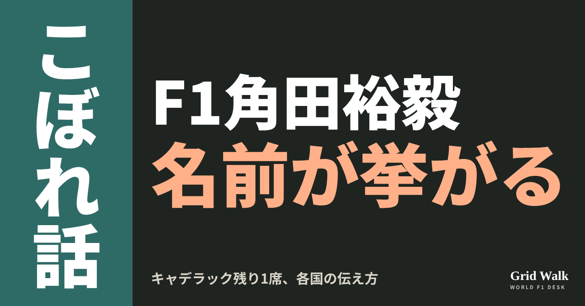
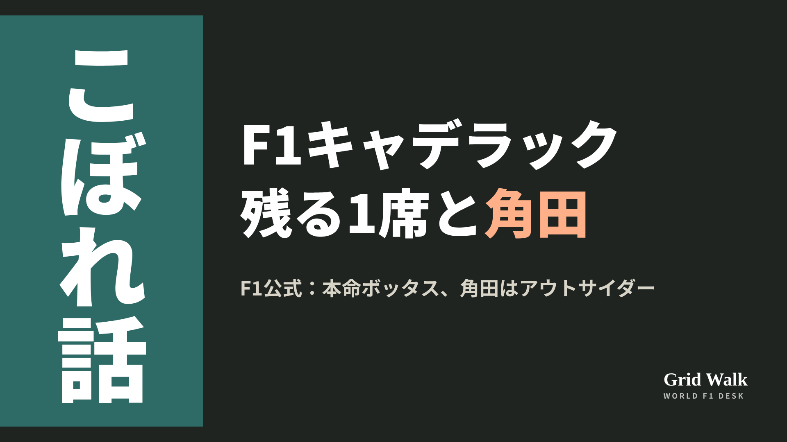

<meta charset="utf-8"><title>角田とキャデラック note貼り付け</title>
<style>
/* one column of numbered paste steps; text steps vs image steps differ by marker */
:root{--bg:#F5F4F0;--card:#FFFFFF;--ink:#1D2321;--mute:#5F665F;--line:#DCDAD2;--btn:#1F5FBF;--btnok:#2E8B4F;--img:#E9F3EC;--imgink:#22663B;--sans:'IBM Plex Sans JP','Hiragino Sans','Noto Sans JP',sans-serif}
@media (prefers-color-scheme:dark){:root:not([data-theme="light"]){--bg:#171A19;--card:#202423;--ink:#ECEDE8;--mute:#A3AAA2;--line:#343937;--btn:#4D8BE6;--btnok:#3FA866;--img:#1E2C23;--imgink:#8FD3A6;color-scheme:dark}}
:root[data-theme="dark"]{--bg:#171A19;--card:#202423;--ink:#ECEDE8;--mute:#A3AAA2;--line:#343937;--btn:#4D8BE6;--btnok:#3FA866;--img:#1E2C23;--imgink:#8FD3A6;color-scheme:dark}
body{background:var(--bg);color:var(--ink);font-family:var(--sans);font-size:15px;line-height:1.75;padding:20px 16px 60px}
main{max-width:680px;margin:0 auto;display:grid;gap:28px}
header h1{font-size:22px;margin:0 0 6px;text-wrap:balance}
header p{margin:0;color:var(--mute);font-size:14px}
nav{display:flex;gap:8px;flex-wrap:wrap;margin-top:12px}
nav a{border:1px solid var(--line);border-radius:999px;padding:4px 14px;color:var(--ink);text-decoration:none;font-size:14px;background:var(--card)}
.part h2{font-size:18px;line-height:1.5;margin:0 0 12px;text-wrap:balance;display:flex;gap:10px;align-items:baseline;flex-wrap:wrap}
.tag{font-size:13px;background:var(--ink);color:var(--bg);border-radius:6px;padding:1px 9px}
.steps{list-style:none;margin:0;padding:0;display:grid;gap:12px}
.st{background:var(--card);border:1px solid var(--line);border-radius:12px;padding:12px;min-width:0}
.hd{display:flex;align-items:center;gap:8px;margin-bottom:8px}
.no{width:26px;height:26px;border-radius:50%;background:var(--btn);color:#fff;display:inline-flex;align-items:center;justify-content:center;font-size:13px;font-weight:700;flex:0 0 26px}
.im .no{background:var(--btnok)}
.hd em{font-style:normal;font-size:12px;background:var(--img);color:var(--imgink);border-radius:6px;padding:0 8px}
.bx{font-size:13.5px;line-height:1.7;border:1px solid var(--line);border-radius:8px;padding:8px 10px;max-height:110px;overflow:auto;overflow-wrap:anywhere}
.bx.tall{max-height:150px}.bx p{margin:0 0 6px}.bx h2{font-size:14px;margin:8px 0 4px}.bx a{color:var(--btn)}
.st img{display:block;width:100%;max-width:100%;border:1px solid var(--line);border-radius:8px}
.sub{font-size:12.5px;color:var(--mute);margin:6px 0 0}
.cp{width:100%;margin-top:8px;padding:12px;border:0;border-radius:10px;background:var(--btn);color:#fff;font:600 15px var(--sans);cursor:pointer}
.cp.ok{background:var(--btnok)}.cp.dl{background:var(--btnok)}.cp:focus-visible{outline:3px solid var(--ink);outline-offset:2px}
.xh{font-size:15px;margin:20px 0 10px}
.fb{font-size:13px;line-height:1.7;margin:8px 0 0;padding:8px 10px;border-radius:8px;background:var(--img);color:var(--imgink)}
.opts{display:grid;grid-template-columns:repeat(auto-fill,minmax(240px,1fr));gap:10px}
.opt{min-width:0}.opt img{display:block;width:100%;border:1px solid var(--line);border-radius:8px}
.ol{display:flex;align-items:center;gap:8px;margin-top:6px}.ol b{font-size:13px;flex:0 0 auto}.ol .on{font-size:12.5px;color:var(--mute);flex:1;min-width:0}.ol .cp{width:auto;flex:0 0 auto;padding:9px 14px}.ol .cp{margin:0;padding:9px}
.toast{font-size:13px;color:var(--mute);margin-top:6px}
</style>
<main><header><h1>角田とキャデラック note貼り付け</h1><p>いま公開済みは1本です。青い番号は文章、緑は画像です。</p><nav><a href="#p1">1</a></nav></header><section class="part" id="p1"><h2><span class="tag">OFF GRID</span>角田裕毅はアウトサイダー？　キャデラック残り1席、各国の伝え方</h2><p class="sub">サイトに公開：15:30</p><ol class="steps">
<li class="st im"><div class="hd"><span class="no">1</span><b>見出し画像</b><em>画像</em></div><button class="cp dl" data-img="img/tsunoda-cadillac-last-seat-20261029.png" data-name="tsunoda-cadillac-last-seat-20261029_見出し画像.png">ダウンロード</button></li>
<li class="st"><div class="hd"><span class="no">2</span><b>タイトル</b></div><div class="bx" id="p1t">角田裕毅はアウトサイダー？　キャデラック残り1席、各国の伝え方</div><button class="cp" data-plain="p1t">タイトルをコピー</button></li>
<li class="st"><div class="hd"><span class="no">3</span><b>本文</b></div><div class="bx tall" id="p1r"><p>キャデラックがペレスとの契約を少なくとも2029年まで延ばしたことで、2027年に空く可能性があるのは、ボッタスの席だけになりました（延長の話は同じ日のWORLD GRIDで https://f1gridwalk.github.io/lens/perez-cadillac-2029-20261029/ ）。その1席について、F1公式サイトは10月28日、本命はボッタス、ハータが有力な対抗で、角田はオコンとともにアウトサイダーとみられる、と書きました。各国の記事を並べると、扱いはさまざまです。</p><p>F1公式の分析と各国の記事へのリンク、10月26日の関連記事はサイトで → <a href="https://f1gridwalk.github.io/lens/tsunoda-cadillac-last-seat-20261029/?utm_source=note&amp;utm_campaign=tsunoda-cadillac-last-seat-20261029">https://f1gridwalk.github.io/lens/tsunoda-cadillac-last-seat-20261029/?utm_source=note&amp;utm_campaign=tsunoda-cadillac-last-seat-20261029</a></p><h2>F1公式の見立て　本命、有力、アウトサイダー</h2><p>書いたのは、F1公式サイトのローレンス・バレット記者です。記事によると、チームはボッタスの契約にある2027年のオプションをまだ使うと決めていません。それでもボッタスが残留の本命で、テストドライバーのハータが有力な対抗、という見立てです。10月26日にサイトで伝えたThe Raceの報道は、ハータを本命としていました。</p><p>ハータ本人は、アメリカGPの週末に、アメリカのRACERにこう話していました。</p><blockquote><p>「時間的な見通しは分かりません。僕にとっては、早ければ早いほどいい」「できるだけ早く乗りたいんです。だから、もちろん来年から乗りたい」（ハータ、RACER／アメリカ）</p></blockquote><p>そのうえで、どこまで実現できるかは分からない、とも話しています。F1公式の記事が角田とオコンに割いたのは、一文だけです。オコンはハースを離れたあとのチャンスを望み、レッドブルのリザーブの角田もこの席とのつながりが取りざたされているが、2人ともアウトサイダーとみられている、という書き方です。</p><h2>各国の伝え方　一行から一段落まで</h2><p>イギリスのPlanetF1は28日、ペレスの相棒を探る記事で、体が空いている角田も連絡したとされる、と一文で触れただけです（要約はサイトに https://f1gridwalk.github.io/news/en-planetf1-cadillac-2027-teammate/ ）。</p><p>フランスのF1サイトPaddock GPは26日、見出しを「キャデラックでは、あちこちからノック　角田は位置取り、ハータはボッタスを狙い、オコンはアストンを見る」とし、ガレージは待合室のようになってきた、と書き出しました。The Raceの報道を紹介したうえで、チームが席を約束したことも、交渉が進んでいることも、何も示されていない、と添えています。ブラジルのTerraも25日、The Raceが伝えた連絡は、ありうるチャンスについての問い合わせで、提案や合意ではない、と書きました。</p><p>スペインのDiariomotorは26日、角田がレギュラーの席のチャンスがあるかを尋ねたという話も出た、と出どころを示さずに一文で触れています。</p><p>いちばん紙幅を割いたのは、アメリカのスポーツサイトSportsnautです。26日の記事は、記者の見方として、角田はハータと同い年だが、関係する経験ははるかに多いと比べ、F2で苦しむハータの代わりに、角田がより安全な選択肢になりうる、と書いています。オランダのF1サイトF1Headは28日、F1公式の分析をもとに、角田とオコンをアウトサイダーと紹介しました。</p><h2>角田とキャデラック、2025年にも出ていた名前</h2><p>角田とキャデラックの名前が並ぶのは、初めてではありません。RacingNews365は2025年6月30日、2026年のキャデラックのドライバー候補の一人として角田が浮上した、と報じていました。今回の話は、10月26日の記事で伝えた、角田の代理人が連絡したというThe Raceの報道から広がっています（https://f1gridwalk.github.io/lens/tsunoda-cadillac-rumor-20261026/ ）。今回開いた記事に、角田本人がキャデラックについて話した言葉はありません。</p><p>編集部としては、角田を候補の一人に並べるところまでは各国とも同じで、その先の書き方に温度差が出ていると見ています。次の手がかりは、F1公式が情報筋の話として伝えた、現地30日（金）のメキシコのFP1でのハータの出走になりそうです。</p><p><strong>角田は、本当にアウトサイダーだと思いますか？</strong></p><p>━━━━━━━━━━</p><p><strong>F1 Grid Walk では、世界のF1ニュースを毎日日本語でまとめています。</strong></p><p>海外の記事の要約を、毎日載せています。</p><p><a href="https://f1gridwalk.github.io/">https://f1gridwalk.github.io/</a></p><p>ほかの海外記事も読みたい方は、F1 Grid Walkへ。</p><p><a href="https://f1gridwalk.github.io/lens/tsunoda-cadillac-last-seat-20261029/">https://f1gridwalk.github.io/lens/tsunoda-cadillac-last-seat-20261029/</a></p><p>━━━━━━━━━━</p><p><a href="https://www.formula1.com/en/latest/article/analysis-what-does-the-future-hold-for-bottas-at-cadillac.1KzNAtutw1HxVernUWD5TG">出典：F1公式サイト（イギリス）</a></p><p><a href="https://racer.com/2026/10/23/cadillac-nearing-decision-on-herta-as-budkowski-refuses-to-confirm-2027-driver-lineup">出典：RACER（アメリカ）</a></p><p><a href="https://www.planetf1.com/news/sergio-perez-cadillac-teammate-2027-bottas-herta-options">出典：PlanetF1（イギリス）</a></p><p><a href="https://www.paddock-gp.com/f1-chez-cadillac-ca-toque-de-partout-tsunoda-se-place-herta-vise-bottas-ocon-regarde-aston/">出典：Paddock GP（フランス）</a></p><p><a href="https://www.terra.com.br/esportes/automobilismo/formula1/f1-2027-yuki-tsunoda-e-cotado-na-cadillac-na-vaga-de-bottas-diz-site,f982ce55b363e9e01a12c0240ebbb861c4aa0vz6.html">出典：Terra（ブラジル）</a></p><p><a href="https://www.diariomotor.com/competicion/noticia/valtteri-bottas-desestima-rumores-sobre-la-perdida-de-su-asiento-para-la-proxima-temporada/">出典：Diariomotor（スペイン）</a></p><p><a href="https://sportsnaut.com/f1/cadillac-could-replace-valtteri-bottas-2027">出典：Sportsnaut（アメリカ）</a></p><p><a href="https://www.f1head.nl/nieuws/cadillac-heeft-de-optie-op-bottas-voor-2027-nog-niet-gelicht/">出典：F1Head（オランダ）</a></p><p><a href="https://racingnews365.com/red-bull-driver-surprisingly-added-to-cadillac-list">出典：RacingNews365（イギリス）</a></p></div><button class="cp" data-rich="p1r">本文をコピー</button></li>
<li class="st"><div class="hd"><span class="no">4</span><b>ハッシュタグ</b></div><div class="bx" id="p1h">#F1 #F1jp #角田裕毅 #キャデラック #ボッタス #コルトンハータ #オコン #移籍のうわさ #F1こぼれ話 #OFFGRID</div><button class="cp" data-plain="p1h">タグをコピー</button></li>
</ol><h3 class="xh">X</h3><ol class="steps">
<li class="st im"><div class="hd"><b>X用の画像</b><em>画像</em></div><button class="cp dl" data-img="img/x_tsunoda-cadillac-last-seat-20261029.png" data-name="x_tsunoda-cadillac-last-seat-20261029.png">ダウンロード</button></li>
<li class="st"><div class="hd"><b>① noteをシェアするときの文</b></div><div class="bx" id="p1x0">ペレス延長で、キャデラックの2027年で空く可能性は1席だけ。F1公式の分析は本命ボッタス、角田はアウトサイダー。6か国の報道で角田の扱いを並べると、一文だけから「より安全な選択肢」まで。noteにまとめました #F1jp #角田裕毅</div><button class="cp" data-plain="p1x0">コピー</button></li>
<li class="st"><div class="hd"><b>② ①への返信</b></div><div class="bx" id="p1x1">ほかの海外記事も読みたい方は、F1 Grid Walkへ。
https://f1gridwalk.github.io/lens/tsunoda-cadillac-last-seat-20261029/?utm_source=x&amp;utm_campaign=tsunoda-cadillac-last-seat-20261029</div><button class="cp" data-plain="p1x1">コピー</button></li>
<li class="st"><div class="hd"><b>③ ②への返信</b></div><div class="bx" id="p1x2">毎日の海外F1ニュースは、日本語でこちらにまとめています。
https://f1gridwalk.github.io/</div><button class="cp" data-plain="p1x2">コピー</button></li>
</ol></section></main><script>
function done(b,msg){const t=b.dataset.t||b.textContent;b.dataset.t=t;b.classList.add('ok');b.textContent=msg||'コピーしました';setTimeout(()=>{b.classList.remove('ok');b.textContent=t},2000)}
function selectEl(el){const r=document.createRange();r.selectNodeContents(el);const s=getSelection();s.removeAllRanges();s.addRange(r)}
async function rich(el,b){
  try{await navigator.clipboard.write([new ClipboardItem({'text/html':new Blob([el.innerHTML],{type:'text/html'}),'text/plain':new Blob([el.innerText],{type:'text/plain'})})]);done(b);return}catch(e){}
  selectEl(el);let ok=false;try{ok=document.execCommand('copy')}catch(e){}
  if(ok){getSelection().removeAllRanges();done(b)}else{done(b,'選択しました。コピーしてください')}}
async function plain(el,b){
  try{await navigator.clipboard.writeText(el.innerText);done(b);return}catch(e){}
  selectEl(el);let ok=false;try{ok=document.execCommand('copy')}catch(e){}
  if(ok){getSelection().removeAllRanges();done(b)}else{done(b,'選択しました。コピーしてください')}}
let dlns=null;(async()=>{try{dlns=await window.claude?.use?.("downloads")}catch(e){dlns=null}})();
async function img(src,b){
  b.dataset.t=b.dataset.t||b.textContent;
  if(!dlns){try{dlns=await window.claude?.use?.("downloads")}catch(e){}}
  if(!dlns){b.textContent='ダウンロードできませんでした';setTimeout(()=>{b.textContent=b.dataset.t},3500);return}
  try{const blob=await fetch(src).then(r=>r.blob());b.textContent='保存の確認を開いています…';
    await dlns.save({filename:b.dataset.name,data:blob});done(b,'ダウンロードしました')}
  catch(e){const c=e&&e.code;b.textContent=c==='declined'?'キャンセルしました':c==='rate_limited'?'少し待ってからもう一度押してください':'ダウンロードできませんでした';setTimeout(()=>{b.textContent=b.dataset.t},3500)}}
document.querySelectorAll('.cp').forEach(b=>b.addEventListener('click',()=>{
  if(b.dataset.rich)rich(document.getElementById(b.dataset.rich),b);
  else if(b.dataset.plain)plain(document.getElementById(b.dataset.plain),b);
  else img(b.dataset.img,b)}));
</script>